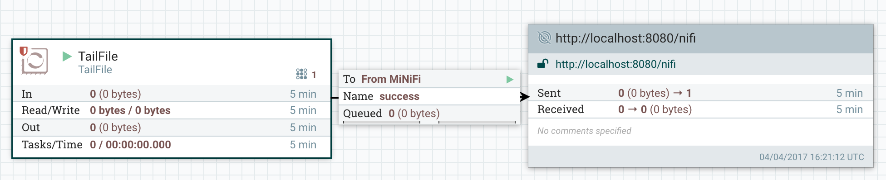
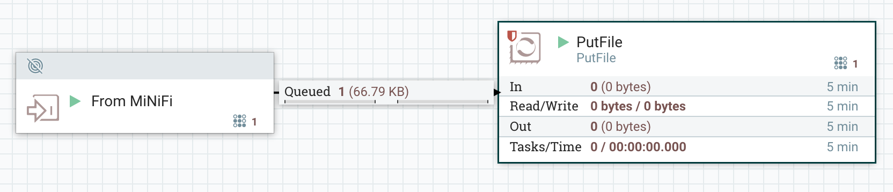

Getting started with MiNiFi
This page explains how to configure and deploy MiNiFi agents.
The Java agent is able to run most of NiFi’s available processors, but is a larger binary distribution (49MB) and consumes greater system resources (24MB max JVM heapsize by default). If you need maximum flexibility to make routing and processing decisions at your data’s point of origin, the Java agent is a good fit.
The C++ agent is a smaller binary (3.2MB), consumes low system memory (about 5MB at idle) but has a limited subset of processors. If your primary concern is gathering and pushing data to downstream consumers and minimizing system impact, the C++ agent is a good fit.
- Install the appropriate OS level dependencies:
MiNiFi Java:
- Java 1.8+
MiNiFi C++:
RHEL/CentOS:
- yum install -y epel-release
- yum install -y leveldb
Debian/Ubuntu:
- apt install -y libleveldb-dev
- apt install -y libxml2
- Download the relevant compressed binary from the Downloads page
- Copy and decompress the binary to your target deployment environment
- Set the MINIFI_HOME environment variable to your decompressed binary directory
- From $MINIFI_HOME, ./bin/minifi.sh {start|stop|run|restart|status|flowStatus|dump|install}
flowStatus and dump are available only for MiNiFi Java.
For MiNiFi Java, the agent logs to $MINIFI_HOME/logs/minifi-app.log.
For MiNiFi C++, the agent logs to $MINIFI_HOME/minifi-app.log.txt
Configuring MiNiFi Agent Flows
Agents execute the flow defined in $MINIFI_HOME/conf/config.yml. The shipped config.yml file has an “empty” flow.
While it’s possible to create and modify config.yml programmatically or by hand, the more common scenario is to:
- Use NiFi’s web interface to define a flow
- Save the flow as a template and download its XML file
- Use the Converter Toolkit to convert the template XML to an equivalent config.yml
- Put the config.yml file in $MINIFI_HOME/conf and start the agent.
Pushing Data From MiNiFi to NiFi
What follows is an illustrated walkthrough of configuring MiNiFi and NiFi to generate and collect log data.
If you’re new to NiFi, watch the NiFi introductory video series before proceeding. If you don’t already have NiFi, you can download it from here.
Configuring NiFi to Receive Data
First, check that $NIFI_HOME/conf/nifi.properties has a Site to Site input socket port specified:
# Site to Site properties
nifi.remote.input.host=
nifi.remote.input.secure=false
nifi.remote.input.socket.port=1026
nifi.remote.input.http.enabled=true
nifi.remote.input.http.transaction.ttl=30 sec
Restart NiFi so changes take effect.
On NiFi’s web UI, place an Input Port “From MiNiFi” and connect it to a downstream processor:

Creating the MiNiFi Flow
Create a new process group, and double click on it to enter it. Working inside this new processor group will let us create a clean template that includes flow components meant to run in MiNiFi.
Inside the process group, create a Remote Process Group (RPG) and give it the URL of your NiFi instance. The RPG will connect to NiFi and discover the input port created earlier.
Create a TailFile processor and connect it to the RPG, selecting the “From MiNiFi” input port. 
Now create a template, download it as an XML file, and download the Converter ToolKit.
From the toolkit directory:
[user@host minifi-toolkit-0.0.1]# ./bin/config.sh transform /path/to/template.xml /output/path/config.yml
Java home: /usr/lib/jvm/jre-1.8.0-openjdk
MiNiFi Toolkit home: /minifi-toolkit-0.0.1
No validation errors found in template.
Open the config.yml file and add Port and Host to a Properties section at the end of the Input Ports section (at the end of the file):
Remote Processing Groups:
- name: http://localhost:8080/nifi
url: http://localhost:8080/nifi
comment: ''
timeout: 30 sec
yield period: 10 sec
Input Ports:
- id: AUTOGENERATED_NIFI_PORT_ID_HERE
name: MiNiFi-input
comment: ''
max concurrent tasks: 1
use compression: false
Properties: # Deviates from spec and will later be removed when this is autonegotiated
Port: 1026
Host Name: localhost
Copy the generated config.yml file into $MINIFI/conf/config.yml, and start MiNiFi:
[user@host nifi-minifi-cpp-0.1.0]# ./bin/minifi.sh start
Starting MiNiFi with PID 463 and pid file /nifi-minifi-cpp-0.1.0/bin/.minifi.pid
After a few seconds, you should see NiFi receiving data on the input port: 
If you do not see data in the queue, it may have already been consumed by the downstream processor (PutFile in this case). If no data is arriving on the input port at all, check the MiNiFi log files, and confirm that the file being tailed exists and is not empty.